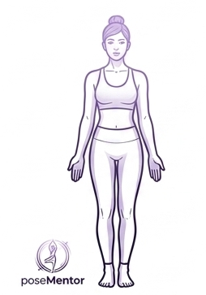

Alineación Objetivo

0%
Dominio
Ángulo de Hombros:180°
Extensión de Codos:180°
Simetría de Brazos:Óptima
Inclinación Torso:0°
Flexión Cadera:180°
Alineación Cervical:Neutro
Extensión Rodillas:180°
Distancia Pies:Alineada
Apoyo de Talones:Suelo
Conectando con las cámaras y preparando tu espacio...